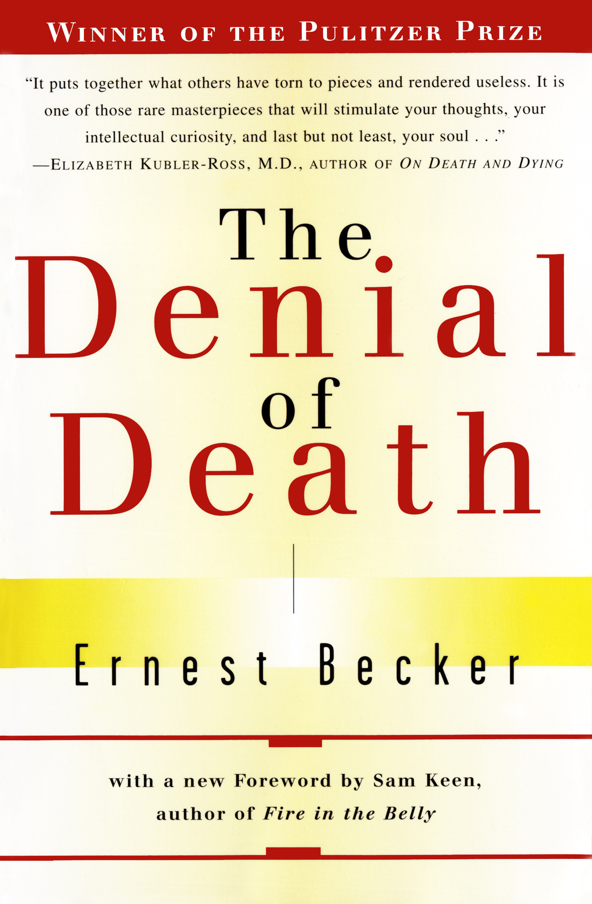

The Denial of Death: Beyond Freud's Understanding of Humanity
Ernest Becker
Presenters: Ziseok Lee, Sohyeon Cho
Date: March 24, 2024
Opening Question: What is the object of my transference?
What fear does that object conceal?
Is that transference object the optimal one?
More broadly, what is my causa-sui project? (Love, alcohol, academic achievement, shopping, faith, etc.)
Chapter 1) Introduction: Human Nature and the Heroic
There is an urge in human nature to become a hero. However, one might not be conscious of it.
We have the privilege of self-expansion, which means we can prove our cosmic significance and the importance of our existence.
An individual must feel heroic in order to exercise the noble aspect of heroism.
Part I: The Depth Psychology of Heroism
Chapter 2) The Terror of Death
A hero is someone who can return alive from the world of death. The terror of death lies dormant within all of us, yet we live by repressing it in our own ways.
Everyone fundamentally harbors the terror of death, and this is the driving force of self-preservation.
It is because we repress this terror of death, rather than remaining constantly conscious of it, that we are able to go about our daily lives.
Chapter 3) The Recasting of Some Basic Psychoanalytic Ideas
The human essence, that is, human uniqueness, does not exist.
→ Humans are neither animals nor gods. Human nature is a paradox in which the animalistic and the symbolic coexist.
However, humans strive to deny their condition; trying to view themselves purely as symbols and acting as if they are not animals is what we call being "anal." (Example: an anal plug used to act as if one does not need to defecate.)
The terror experienced from interacting with parents since childhood manifests as the Oedipal project (independence), castration complex, and penis envy (fear of mutilation, the finitude of the body), which is then resolved through sexual acts (the physical self). By experiencing the castration complex in childhood, the child becomes aware of the conflict between the body and the self.
Ontological paradox; individuality within finitude means "I am amazing~ haha" vs. "I am but a speck of dust in the universe.. sob."
Causa-sui: The ability to create one's own meaning.
Chapter 4) Human Character as a Vital Lie
If the basic nature of heroism is unadorned courage, why are so few people truly courageous?
It is because they feel they have no authority.
Why? According to Maslow, it is due to the evasion and fear of the intensity of life (the Jonah Syndrome). As creatures, feeling fear and awe toward nature is instinctive.
On the flip side of the terror of death is the fear of one's own godlike greatness. There is an ambivalent emotion of striving toward one's maximum potential while simultaneously trying to avoid it. This is because nothing awakens the anxiety of death and annihilation as much as being fully alive—experiencing and forging one's individuality.
We fear our highest possibilities. We are generally afraid to become that which we can glimpse in our most perfect moments.
(The Jonah Syndrome) For some people, this evasion of one's own growth, setting low goals, the fear of doing what one is capable of, voluntary crippling, mock stupidity, and false humility, etc., are in fact defenses against grandiosity.
Maslow
"We have an ambivalent attitude toward our own inner divinity; we are fascinated by it and at the same time afraid of it, motivated by it and defensive against it. This is one aspect of the basic human predicament, that we are simultaneously worm and God." In other words, there exists a god with an anus.
Q. Is my current life the best life I can live out? Is there anything I can improve? (Regarding creative solutions, Jonah Syndrome)
Humans => Have a fear of life and death. Children are in the process of learning how to forget this fact, and through forgetting, they can establish their lifestyle.
Character is a neurotic defense against despair. Because reality is suffering, one learns how to avoid suffering, i.e., reality.
There is an opinion that a child is made by their environment (the role of parents is important).
But Brown counters that the child adapts to the environment themselves.
Chapter 5) The Psychoanalyst Kierkegaard
Human = Spirit + Body
Spirit; Enables self-consciousness and the recognition of anxiety. The difference from animals. → Kierkegaard understood human character as a structure built to avoid anxiety.
The inauthentic man = the man of immediacy = the snobbish person who lives thoughtlessly, just going with the flow (Inauthentic).
He notes that the reason humans try to live ordinary lives is that the freedom of infinite possibilities is dangerous, thus stemming from a desire to control those possibilities. Conversely, excessive limitation (finitude, necessity) causes humans to experience everything as inevitable and trivial.
Then what should be done about this anxiety? It cannot be shaken off. However, we can use anxiety as a driving force for a leap toward growth, moving into new adventures. One must seek something beyond the human to resolve anxiety. This is the very meaning of faith.
Chapter 6) Re-examining the Problem of Freud's Character
Freud emphasizes creatureliness as instinctive human behavior; sexual theory. Repressed sexuality.
He emphasized repressed sexuality rather than the repressed awareness/fear of death.
However, Freud failed to abandon the causa-sui project; that is, he could not submit.
His limitation was that he could not let go of his obsession with the Eros sexual drive.
Part II: The Failing of Heroics
Chapter 7) The Spell Cast by Persons - The Nexus of Unfreedom
Why do we follow people in power?
Because of transference. (Because we want to become like the powerful person. We can feel as if we hold power ourselves, and we gain an object to blame for the consequences of our actions.)
The powerful person can also project their own fears onto their followers, making it a symbiotic relationship.
What is transference?
→ It is a controlling method to project our problems. It is used as a means of taming terror and satisfying the conscience, that is, the urge to be good.
Humans live by projecting their fears of life and death outward.
There are broadly two types of transference: (1) Idealization of an object that makes one feel powerful, a transference that elevates it above reality (2) Perceiving an object that causes helplessness more negatively.
Agape |
|
Eros |
|
Rank: Submitting to God represents the culmination of agapic love expansion and truly creative types of fulfillment.
Ontological paradox: "If he gives in to agape he risks failing to develop himself, his active contribution to the rest of life. If he expands Eros too much he risks cutting himself off from natural dependency, from duty to a larger creation."
Chapter 8) Otto Rank and the Closure of Psychoanalysis on Kierkegaard
The Romantic Solution; Fixating the urge for cosmic heroism onto the love object. Deifying the romantic partner and spiritually submitting to them. One desires salvation from the partner, but that is impossible. (In the long run, such symbiotic relationship becomes demoralizing to both parties, for it is just as unbearable to be God as it is to remain an utter slave.)
'Death is the twin brother of sex.'
-> Sex is a denial through physical death (reproducing animals die) and a denial of unique individual talent.
When a child asks sexual questions, one must explain the ultimate mystery of life, not biological facts.
Humans must aim for the highest beyond of religion. Submitting to God and yielding to nature is conquering death.
Dating Tips!
What disaster unfolds when you make your romantic partner your God?
- Just as easily as the partner becomes a god, they can turn into a devil. You become bound to them as much as you depend on them, because instead of empowering each other, you might use and be used by each other in an abusive way.
- When the partner becomes my God, even their slightest flaw becomes a massive threat to me. "She diminishes" = "I die" → Irritation, emptiness, feelings of worthlessness.
- You hope to achieve perfect salvation from your partner, but because the partner is also a human seeking salvation, you cannot be saved. Salvation can only be received when we let go of ourselves and admit that we are creatures.
- While agonizing over the burden of being a god, they simultaneously harbor disappointment and resentment toward the pathetic, worthless slave (the other person).
- Becoming disillusioned with such an imperfect relationship and pursuing purely hedonistic and physical sex—as mentioned above, since sex is closely tied to inferiority and death—fails to provide a long-term solution to the 'problem of heroism.' (ex) Playboys, hedonists.
[The Creative Solution]
- Humans need a "beyond," but they reach for what is closest first. This gives the fulfillment a person needs, but at the same time limits and binds them.
- Most people agree to secure their immortality in a popular way planned by pervasive communities, in the "beyond" of people other than themselves.
- Because individual heroism through individuation is a very daring adventure and entails the strength and courage to endure isolation.
- Kierkegaard and Rank reached the same conclusion: the only way out of human conflict is to offer one's gifted life to the highest power, which is complete surrender. Surrendering the world and oneself, and placing their meaning in the power of creation, is the hardest thing for a human to achieve.
- One can know how to develop a creative work with all passionate force—a work that redeems our soul—and at the same time, how to surrender that very work because the work itself cannot offer salvation. (This is the best solution to the ontological paradox, i.e., the creative solution.)
Chapter 9) The Present Outcome of Psychoanalysis
Neurosis is universal. Every human being lives reality through repression (partialization, fragmentation). Balancing integration and separation between the world and oneself is ideal.
The neurotic is bound inwardly and exhausts themselves. Their inability to exercise creativity and be productive is what distinguishes them from the artist.
One must live in the world with objective creativity.
'Causa-sui project: Pretending that one is invulnerable because they are protected by the power of others and culture, that they are important in nature, and that they can do something about the world.'
Humans live with illusions. (External illusions: art, religion, philosophy, science, love / Internal illusions: the belief that one can rely on one's own power and that of others). Life is possible only as an illusion.
Religion (Christianity)
-> By having certainty in and leaning on God, humans can expand and develop their own power (transference),
solve the problem of death (confessing one's creatureliness by yielding to nature, and expanding oneself as a heroic personality),
and gain hope through their creatureliness.
What psychoanalysis calls 'neurosis' and what religion calls 'sin' are in fact the same thing. Neurosis; the attempt to isolate oneself from nature to create one's own world.
Sin; elevating oneself to a godlike existence, idolizing oneself to deny one's weakness and dependency.
→ The attempt to pretend one is truly satisfied with the causa-sui project and force it upon nature (blindly worshipping a narrow object, restricting the miracle of creation and its total meaning to oneself, and pretending that one can derive a blessing from it. = defrauding oneself.)
It is not only unrealistic, but one loses the comfort they could have received from realistic illusions. As a result, the sinner (or neurotic) becomes overly conscious of and experiences their own creatureliness, misery, worthlessness, and guilt, which they tried so hard to deny.
They alternate between the extremes of "I am everything" ←→ "I am nothing."
Modern culture, which reduces everything in life to observable evidence and deductive logic, has made it difficult to have "faith," and as a result, has become a cultural factor in the occurrence of such neuroses.
→ The problem of life lies in what level of illusion one lives within. (It is impossible to have no illusions.)
Q. What is the "best" level of illusion or object of transference for a human being to live by?
Chapter 10) Causes of Mental Illness
- Depression: When one fails to retain/exercise heroism, they feel helplessness, dependency, and guilt. They use guilt to control others and elevate themselves.
- Schizophrenia: A narcissistic neurosis that distrusts oneself and others.
Human experience is divided into the symbolic self and the physical self, and if these are not integrated, it can be called schizophrenia. Unlike a normal person, they cannot confidently control their experiences and lack an ego capable of giving creative form to their personal meaning. - Perversion: A resistance against allowing individuality to be crushed by the body.
It separates the self and the body. Failing to feel security in repression and the body/ego, they seek to feel control and safety through a specific object. - Masochism/Sadism: They feel they are controlling suffering either by suffering themselves or by inflicting pain on others. Ultimately, they aim to control the terror of death.
(Adler) At the base of all mental illness is a problem of courage. They cannot take responsibility for their own independent lives. The mentally ill person is extremely afraid of life and death. Unable to take responsibility for their life (inability) and being afraid (terror), they fail to exercise cultural heroism.
From this point of view the problem of mental illness is one of not knowing what kind of heroics one is practising or not being able—once one does know—to broaden one’s heroics from their crippling narrowness. Paradoxical as it may sound, mental illness is thus a matter of weakness and stupidity. It reflects ignorance about how one is going about satisfying his twin ontological motives. The desire to affirm oneself and to yield oneself are, after all, very neutral: we can choose any path for them, any object, any level of heroics. The suffering and the evil that stems from these motives are not a consequence of the nature of the motives themselves, but of our stupidity about satisfying them.
Part III: Retrospect and Conclusion: The Dilemmas of Heroism
Chapter 11) Psychology and Religion: What is the Heroic Individual?
'Psychotherapy can help one affirm themselves, tear down the idols that constrict self-esteem, and lighten the burden of neurotic guilt.'
Humans are bound to their character and cannot transcend it to become a new creature. One cannot overcome the limits of the human condition.
(Rieff) Because humans cannot experience everything, repression does not distort the world; rather, repression is the only truth a human can know. To achieve true human existence, there must be limits. The all-or-nothing neurotic consciousness of an individual who cannot partialize the world (a deadlock between megalomania or a worthless sinner) → There is a need to set limits and partialize.
(Tillich) Humans must possess the "courage to be" oneself, become an independent being, and face the eternal contradictions of the real world. The bold aim of this kind of courage is to absorb nonbeing into one's own being as much as possible. In this ontology of immanence of the New Being, what we describe is not a creature transformed in some miraculous way and transforming the world, but a creature that takes more of the world into itself and develops new forms of courage and endurance.
Humans must aim beyond their own bodies. One can be healed only by projecting their problems onto a religious God.